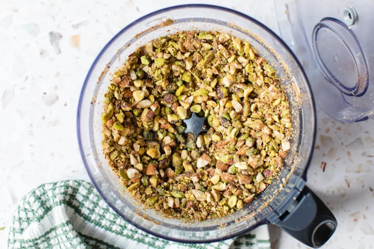
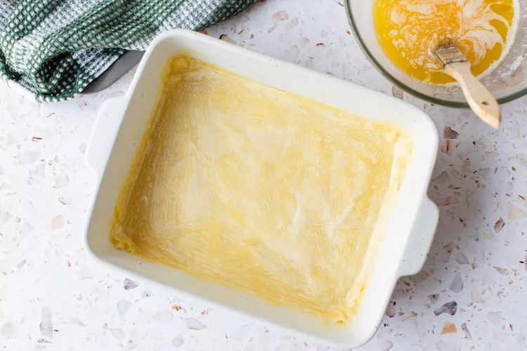
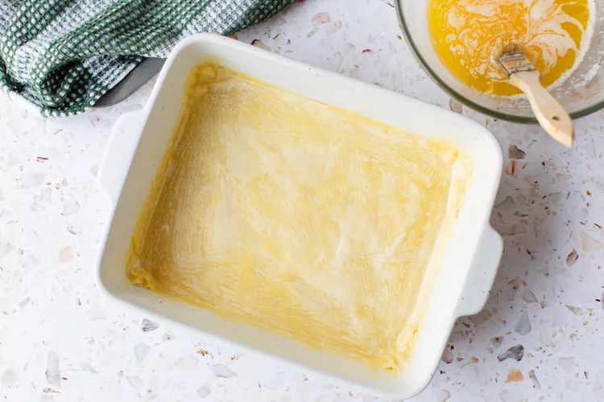
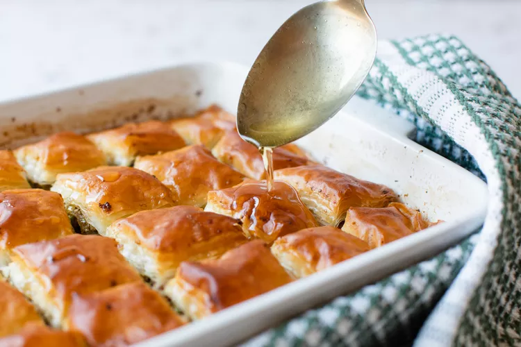

Története
A baklava egy finom, a közel-keleti országokban népszerű foszlós tészta. Feltételezhetően török eredetű, a Bizánci Birodalomból (vagy még korábbról) származik, bár számos kultúra vallja magáénak. Számos görög és libanoni étteremben szolgálják fel, és ma már több egykori oszmán ország kiemelt desszertje.
Hozzávalók
A süteményhez:
|
A sziruphoz:
|
Recept
A vaníliarudat felhasítom, magjait kikaparom. Elkészítem a szirupot: a cukrot, a vizet, a vaníliarudat és a magokat, és a fahéj rudakat kis lábosba teszem. Közepes lángon felforralom, amikor felforrt és a cukor feloldódott visszaveszem a lángot és 10 percig gyöngyöztetem. Hozzákeverem a mézet, újra felforralom, majd hagyom kihűlni. Ekkor keverem hozzá a narancsvirágvizet.
Közben a magokat száraz serpenyőben aranybarnára pirítom.
A vajat felolvasztom. A sütőt 180 fokra előmelegítem. A süteményhez a 20×26 cm-es sütőformát alaposan kivajazom – érdemes olyan formát választani, ami nem sérülékeny, vagy nem sajnáljuk az alját, mert a formában, sütés előtt fel kell vágni a süteményt. Én egy duplára hajtott sütőpapírt tettem az aljára.
 

A réteslapokat kettéhajtva fogjuk felhasználni, ha kell méretre vágom őket és nyirkos konyharuhába teszem. Egy lapot kettéhajtok és a formába teszem. Alaposan megkenem olvasztott vajjal és egy következő lapot fektetek rá. Ezt szintén megkenem és addig ismétlem a műveletet, amíg 4 kettéhajtott lapom, azaz 8 réteg lesz a formában. Bőségesen megszórom durvára vágott magokkal és 1 ek cukorral. A következő kettéhajtott réteslap mindkét oldalát megkenem vajjal, hogy a magokhoz ragadjon hozzá, ne váljon majd el tálaláskor. A rétegezést ugyanúgy folytatom, ahogy előzőleg, 8 réteg réteslap után ismét az aprított magok következnek. Ismét egy mindkét oldaláról megkent kettéhajtott réteslap következik, majd további 3, amíg elérem a 8-at. A tetejét is jól megkenem vajjal, majd egy egészet kissé lenyomkodom és hagyom 10 percig állni. Éles késsel felvágom 12 téglalapra, amelyeket utána átlósan kettévágok, hogy háromszögeket kapjak. 180 fokra előmelegített sütőben 40-45 percig sütöm, amíg szép világosbarnára sül.
A sütőből kivéve 5 percig hagyom pihenni, majd meglocsolom a hideg sziruppal – először a széleken és a vágások mentén, végül mindenhova locsolok a szirupból. Megszórom a tetejét is a magokkal, majd hagyom teljesen kihűlni – kb. 8 óra. Hűteni nem szabad!
